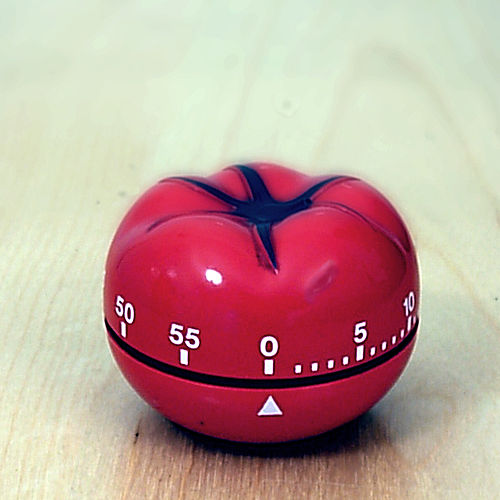

The Pomodoro Technique is a time management method developed by Francesco Cirillo in the late 1980s. It uses a kitchen timer to break work into intervals, typically 25 minutes in length, separated by short breaks. Each interval is known as a pomodoro,from the Italian word for tomato, after the tomato-shaped kitchen timer that Cirillo used while a university student
This is a picture of the timer mentioned
Astronomy, Popular TV Shows, Coal, and Spinning
What are the steps to use the pomodoro timer?
This is a video and audio talking about the steps in the Pomodoro method.
The pomodoro method uses a timer that you set for around 25 minutes. During this time you are focused on during work. Then you take a 5 minute break after. After doing 4 rounds of this you take a longer break (somewhere around 20/30 minutes)
Here is a secret button that you can click
(PS It doesn't do anything)